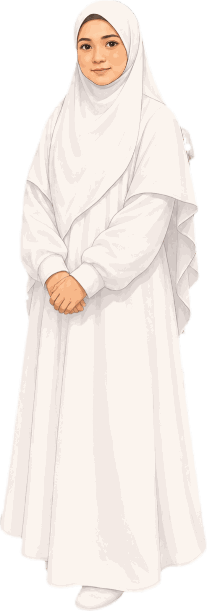

Panduan Umrah
Dari Miqat ke Tahallul
Tak perlu bawa buku. Belajar di rumah dengan Mod Bacaan — kemudian di Tanah Suci, buka Mod Ibadah dan ikut langkah satu persatu.
Umrah Sekilas Pandang
Seluruh ibadah umrah dalam satu skrin.
Peta Perjalanan Umrah
Pengenalan Umrah
Maksud, hukum, syarat, rukun dan wajib — asas yang mesti difahami.
Maksud Umrah
Dari segi bahasa, umrah bermaksud ziarah. Dari segi syarak, ia ialah mengunjungi Baitullah untuk melaksanakan tawaf, saie dan tahallul dengan niat dan syarat tertentu.
Hukum & Waktu
Dalam Mazhab Syafie, umrah wajib sekali seumur hidup bagi yang mampu (terdapat pandangan lain yang mengatakan sunat muakkad). Umrah boleh dilakukan sepanjang tahun, kecuali bagi orang yang sedang berihram haji sehingga selesai kerja-kerja hajinya.
Hadis: jihad bagi wanita
Syarat Wajib Umrah
Mampu meliputi tubuh badan, kewangan dan keamanan perjalanan. Umrah kanak-kanak sah sebagai sunat, tetapi tidak menggugurkan umrah wajibnya apabila dewasa.
Infografik: Rukun · Wajib · Sunat
Tertinggal = umrah tidak sah. Tiada ganti — mesti dibuat.
- Niat ihram
- Tawaf
- Saie
- Bercukur / bergunting
- Tertib
Tertinggal = umrah sah, tetapi dikenakan Dam (berdosa jika sengaja).
- Berihram dari miqat
- Menjauhi pantang larang ihram
Tambahan pahala. Tertinggal tidak menjejaskan umrah.
- Mandi & solat sunat ihram
- Talbiah
- Idtiba' & ramal (lelaki)
- Solat sunat tawaf & Zamzam
Persediaan Ihram
Dilakukan di hotel Madinah (jika ke Bir Ali) atau sebelum ke lapangan terbang.
Senarai Semak Sunat Sebelum Ihram
- ✓Potong kuku, kemas misai, janggut & rambut
- ✓Buang bulu ketiak dan ari-ari
- ✓Mandi sunat ihram (cara seperti mandi wajib, niat berbeza)
- ✓Wangian pada badan sahaja — bukan pada kain ihram (wanita: bau tidak kuat)
- ✓Pakai pakaian ihram
- ✓Solat sunat ihram 2 rakaat
Pakaian Ihram: Lelaki vs Wanita
👳 Lelaki
- 2 helai kain putih tidak berjahit — rida' (atas) & izar (bawah)
- Selipar yang menampakkan jari & tumit
- Beg / tali pinggang duit dibenarkan
- Seluar dalam, baju, stokin, kasut tertutup
- Songkok, kopiah, topi, menutup kepala
🧕 Wanita
- Pakaian biasa yang longgar & menutup aurat
- Stokin & kasut dibenarkan
- Muka dan kedua tapak tangan terbuka
- Purdah / niqab menyentuh muka
- Sarung tangan

- Sediakan klip / pin kain untuk mengemaskan izar — memudahkan ke tandas.
- Jika sukar berjalan jauh, maklumkan mutawwif awal untuk kerusi roda.
Solat Sunat Ihram (2 Rakaat)
Rakaat 1: al-Fatihah + al-Kafirun · Rakaat 2: al-Fatihah + al-Ikhlas
Miqat & Niat Umrah
Titik permulaan ihram. Selepas berniat, semua pantang larang bermula.
Dua Laluan Jemaah Malaysia
🚌 Dari Madinah
Miqat: Zulhulaifah (Bir Ali), ± 11 km dari Masjid Nabawi. Berhenti, solat sunat & berniat di Masjid Bir Ali.
✈️ Terus ke Jeddah
Miqat: Qarnul Manazil. Berniat di atas pesawat sebelum melepasinya — tunggu pengumuman kru kabin.
- Tertidur di pesawat dan terlepas pengumuman miqat — berniat selepas melepasi miqat mewajibkan Dam.
- Menyangka niat mesti dilafaz kuat — niat itu di hati; lafaz hanya membantu.
- Jika terbang terus ke Jeddah, pakai ihram dari KLIA — tak perlu bersalin dalam tandas pesawat.
- Minta kru atau mutawwif ingatkan 30 minit sebelum tiba di miqat.

Lafaz Niat Umrah
🧕 Niat bersyarat (wanita bimbang haid)
Bagi wanita yang bimbang haid datang sebelum sempat menyempurnakan umrah, digalakkan berniat secara bersyarat:
Jika haid datang, dia terlepas daripada pantang larang ihram dan tidak terikat lagi dengan kerja umrah tersebut.
🤝 Niat umrah badal (untuk orang lain)
Untuk yang telah meninggal dunia atau uzur kekal — sebut nama orang tersebut di tempat "fulan":
Infografik: Pantang Larang Ihram
Berkuat kuasa dari saat niat sehingga selesai tahallul.
Dibenarkan — jangan was-was:
Talbiah
Menyahut jemputan Allah — dibaca berulang-ulang selepas niat.
Bila Mula & Bila Berhenti?
▶ Mula
Sejurus selepas niat ihram di miqat. Lelaki dengan suara nyaring, wanita perlahan.
⏹ Berhenti
Apabila memulakan tawaf (ketika istilam di Hajarul Aswad).
Masuk Masjidil Haram
Detik pertama menatap Kaabah — masuk dengan adab, kaki kanan dan doa.


Doa Masuk Masjidil Haram
Sunat masuk melalui pintu Babussalam (jika mudah) dengan kaki kanan:
Doa Ketika Melihat Kaabah
Angkat tangan dan berdoalah — antara waktu mustajab:
- Berhenti di tepi laluan untuk berdoa — jangan di tengah arus jemaah.
- Catat nombor pintu tempat masuk (cth. Pintu 1 – King Abdul Aziz). Ada ruangan untuk mencatatnya dalam Mod Ibadah.
- Tetapkan tempat berkumpul dengan kumpulan jika terpisah.
Tawaf Umrah
7 pusingan lawan jam, mula & tamat di Hajarul Aswad, Kaabah di sebelah kiri.
Peta Interaktif Kawasan Tawaf
Ketik penanda bernombor untuk penerangan setiap lokasi.
Infografik: Idtiba' & Ramal (Lelaki)
Idtiba': letak bahagian tengah kain rida' di bawah ketiak kanan dan hujungnya di atas bahu kiri — sepanjang tawaf. Tutup semula sebelum solat sunat tawaf.
Ramal: berlari-lari anak dengan langkah pendek pada 3 pusingan pertama (jika keadaan mengizinkan):
Wanita tidak melakukan idtiba' dan ramal.
Niat & Kedudukan Tawaf
Niat tawaf umrah sudah terkandung dalam niat umrah di miqat. Lafaz ini untuk menghadirkan hati:
Cara Tawaf — 6 Langkah
- Berwuduk. Lelaki buat idtiba'. Pergi ke penjuru Hajarul Aswad — cari lampu hijau di dinding masjid.
- Istilam: hadap Hajarul Aswad, angkat tangan kanan, isyarat dan kucup tangan:
- Mula berjalan — Kaabah di kiri. Ulang istilam setiap kali tiba di garis lampu hijau.
- Di Rukun Yamani: usap dengan tangan jika mampu (tanpa kucup); jika tidak, teruskan tanpa isyarat.
- Antara Rukun Yamani → Hajarul Aswad, baca:
- Selesai 7 pusingan, keluar dari arus dan ke belakang Maqam Ibrahim.
Syarat Sah Tawaf
- Memotong melalui Hijr Ismail — pusingan itu tidak dikira kerana Hijr Ismail sebahagian Kaabah.
- Bahu menghadap Kaabah semasa berjalan (cth. ketika istilam sambil melangkah).
- Berhenti lama di garisan Hajarul Aswad hingga menyekat arus.
- Berasak untuk mencium Hajarul Aswad hingga menyakiti orang — istilam dari jauh memadai.
- Ragu bilangan lalu mengambil yang lebih — ambil yang paling sedikit (yakin).
- Tawaf di tingkat atas atau dengan kerusi roda sah — pusingan lebih jauh, tetapi lebih lapang dan selamat.
- Wuduk batal? Keluar, berwuduk, dan sambung dari pusingan yang terhenti.
- Gunakan kaunter dalam Mod Ibadah supaya tidak tersilap kira.

Solat Sunat Tawaf & Zamzam
Dua amalan sejurus selepas tawaf.
Solat Sunat Tawaf (2 Rakaat)
Rakaat 1: al-Fatihah + al-Kafirun · Rakaat 2: al-Fatihah + al-Ikhlas
- Tak perlu berebut tempat betul-betul di belakang Maqam — mundur ke ruang lapang.
- Boleh solat sambil duduk di kerusi jika uzur.
Minum Air Zamzam
Minum sambil berdiri menghadap kiblat, dengan niat dan hajat masing-masing.
Saie (Safa ↔ Marwah)
7 perjalanan sehala — mengenang perjuangan Sayyidatina Hajar mencari air untuk Nabi Ismail AS.
Syarat Sah Saie
Infografik: Kiraan 7 Perjalanan
Bacaan Saie
① Ketika menghampiri Safa (permulaan saie sahaja):
② Di atas Safa & Marwah — naik sedikit, hadap Kaabah, angkat tangan. Baca zikir ini, kemudian berdoa; ulang 3 kali:
③ Di zon lampu hijau — lelaki berlari-lari anak, wanita berjalan biasa:
Sepanjang perjalanan: berzikir dan berdoa bebas. Sunat berwuduk, tetapi saie tetap sah tanpa wuduk.
- Mula di Marwah — perjalanan pertama tidak dikira. Ikut papan tanda الصفا.
- Mengira pergi-balik sebagai satu — sebenarnya dua.
- Wanita turut berlari di zon lampu hijau — sunat itu untuk lelaki sahaja.
- Saie sebelum tawaf, atau tanpa tawaf yang sah.
- Jarak saie ± 3.2 km — gunakan laluan kerusi roda / skuter jika perlu.
- Boleh berhenti dan duduk berehat, kemudian sambung.
- Bawa botol air Zamzam.


Tahallul
Rukun terakhir — tanda keluar daripada ihram, sejurus selepas saie.
Tahallul ialah rukun, bukan pilihan. Selagi belum bertahallul, umrah belum selesai dan pantang larang ihram kekal berjalan.
- Menggunting rambut orang lain (termasuk pasangan) sebelum diri sendiri bertahallul. Minta orang yang sudah halal gunting untuk anda dahulu.
- Wanita menggunting rambut di tempat terbuka hingga terdedah aurat.
- Memotong hanya 1–2 helai — pastikan sekurang-kurangnya 3 helai.
- Menukar pakaian biasa sebelum bergunting.
Soalan Lazim Semasa Ibadah
Situasi yang kerap berlaku di Mataf dan Mas'a.
💧 Wuduk terbatal ketika tawaf?
Keluar dari arus, berwuduk semula, kemudian sambung dari pusingan yang terhenti. Tidak perlu mula dari awal.
🤝 Tersentuh kulit bukan mahram ketika sesak?
Dalam Mazhab Syafie, bersentuhan kulit lelaki dan wanita bukan mahram membatalkan wuduk. Dalam keadaan sesak yang sukar dielakkan, terdapat keringanan yang diguna pakai dalam panduan ibadah jemaah Malaysia. Rujuk mutawwif anda untuk panduan yang dipegang kumpulan.
🤔 Ragu sudah berapa pusingan?
Ambil bilangan yang paling sedikit (yang yakin), kemudian tambah pusingan yang kurang. Kaunter dalam Mod Ibadah membantu mengelakkan keraguan.
📢 Azan / iqamah ketika tawaf atau saie?
Berhenti dan tunaikan solat fardu berjemaah. Selepas solat, sambung dari tempat berhenti — tidak perlu ulang.
😮💨 Letih — boleh berehat?
Boleh. Berturut-turut (muwalat) antara pusingan hanyalah sunat. Duduk berehat seketika, kemudian sambung.
🩸 Haid datang sebelum tawaf?
Wanita haid tidak boleh bertawaf. Tunggu sehingga suci kemudian mandi dan teruskan. Jika berniat bersyarat, dia boleh bertahallul. Jika tidak sempat kerana jadual pulang — rujuk mutawwif segera.
🩸 Haid datang selepas tawaf, sebelum saie?
Saie tidak disyaratkan suci. Teruskan saie dan tahallul — umrah sah.
♿ Tawaf / saie dengan kerusi roda atau di tingkat atas?
Sah. Pastikan Kaabah tetap di sebelah kiri semasa tawaf, dan saie penuh dari Safa ke Marwah.
🧭 Terpisah daripada kumpulan?
Jangan panik. Pergi ke tempat berkumpul yang dipersetujui, atau tunjukkan Kad Saya (butang 🪪 di atas) kepada petugas masjid. Isi kad itu sebelum ke masjid.
Umrah Selesai
Tahniah! Semak semula rukun dan wajib anda.
Semakan Rukun
- ✓Niat ihram
- ✓Tawaf 7 pusingan dengan yakin
- ✓Saie 7 perjalanan (Safa → Marwah)
- ✓Tahallul minimum 3 helai
- ✓Tertib mengikut urutan
Semakan Wajib
- ✓Berniat ihram DI miqat
- ✓Pantang larang ihram terpelihara
Tempat & Waktu Mustajab Doa
Doa Penutup
Seperti doa Nabi Ibrahim AS dan Nabi Ismail AS selepas membina Kaabah: